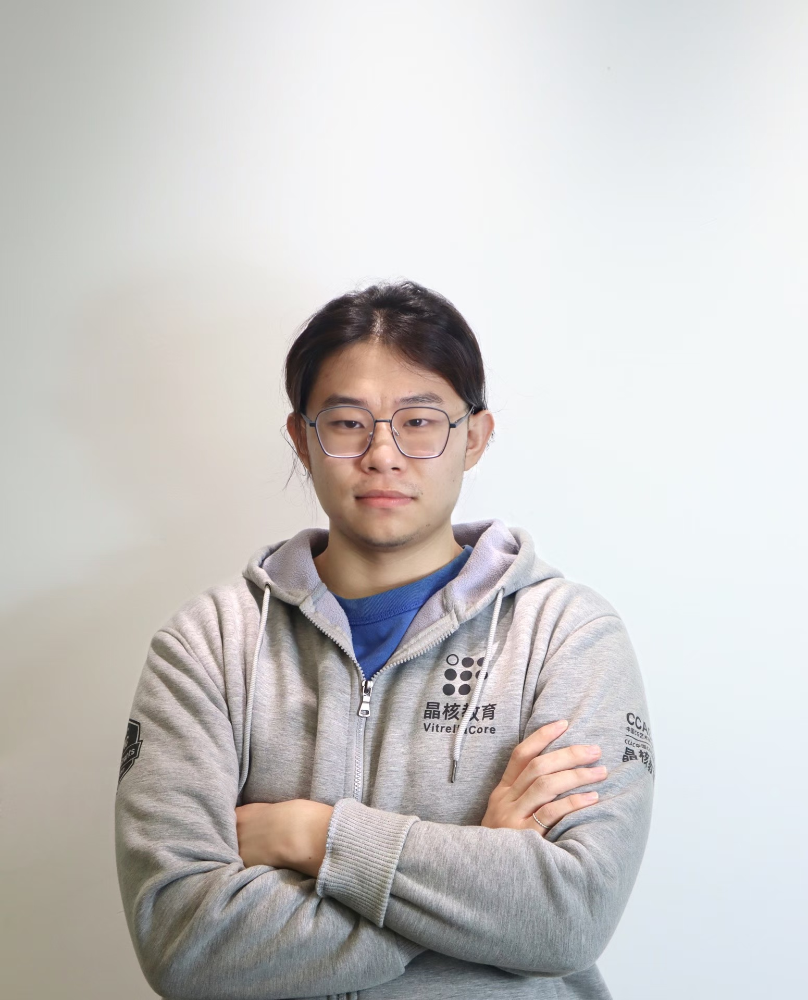

虚幻晶核教育
教师
教学内容与课程案例待补充。
UNREAL ENGINE · VERSATILE CREATOR
我是 Hikari，能够在地编、实时特效、UE 客户端程序与独立游戏开发之间协同推进。
拥有虚幻引擎教学、驻场项目与多人游戏开发经历。
01 / PROFESSIONAL EXPERIENCE
虚幻引擎教学 · 驻场项目 · 独立游戏开发
教师
教学内容与课程案例待补充。
驻场经历
项目内容与个人职责待补充。
独立游戏开发
重点项目：联机玩法、规则模块与游戏系统开发。
02 / FEATURED PROJECT · C++ GAMEPLAY
独立游戏开发 / 重点项目
以多人 PVE 搜打撤为目标，基于 Lyra 框架开展项目开发，主要游戏逻辑由本人编写。这里通过具体模块与设计取舍，展示 C++ 玩法开发、联机交互和跨系统整合能力。
项目实机画面暂不公开，以下以源码结构为依据进行脱敏说明。
探身操作先在本地响应，再通过 Server RPC 进行服务器校验；受阻时通知客户端取消。方向状态复制后，以插值驱动表现，并向动画层提供侧倾参数。
体现：输入响应、服务器校验、状态同步与动画参数衔接。
由服务器设置难度与配置资产 ID，客户端通过 RepNotify 触发资源加载。使用 Asset Manager 异步读取配置，并将配置就绪与 Experience 就绪共同作为玩家开局条件。
体现：数据驱动、异步回调和初始化依赖管理。
基于 Lyra 的 Experience 组织方式，从本局启动参数读取额外规则插件，合并 Experience 与 Action Set 的插件列表后加载、激活，用于组织关卡环境规则差异。
体现：理解既有框架，并按玩法需求接入扩展；基础加载框架属于复用。
以 GameState 组件集中维护个人与团队结算数据；关键写入检查服务器权限，通过属性复制与更新委托衔接显示。评分参数放入独立配置资产，分离计算规则与表现。
体现：多人数据归属、玩法模块拆分与可配置规则。
通过交互接口连接 StateTree 任务与场景对象，支持开始、完成和延时完成模式；任务实例保存运行数据，并通过成功、失败状态反馈执行结果。
体现：接口解耦、任务生命周期与 C++ / 蓝图协作。
自行研究项目所需的程序化动画方案。当前可公开的 C++ 实现包括探身参数、碰撞约束与平滑过渡；完整动画方案的结构与验证材料将在后续技术拆解中补充。
展示范围：技术说明；完整方案与实机画面暂未公开。
Experience 与局内配置分别加载，玩家启动处汇合检查两项状态。
项目使用 Lyra 与第三方插件。作品集侧重项目中的接入、规则扩展和玩法模块，框架原有能力不计为从零自研；源码结构也不能单独证明每段代码的作者或 AI 使用比例。
该项目以本人开发为主，AI 辅助使用较少；同时具备与 AI 协作快速制作游戏原型的能力，能够围绕需求拆解、实现验证与迭代推进开发。
此位置预留项目实机视频。当前通过技术模块说明展示开发能力，不提供未公开画面。
PUBLIC PROJECT / STEAM
一款发生于虚构世界的荒诞物理喜剧游戏。玩家控制角色的双手处理工作，在压力和意外不断升级的直播中坚持到午夜。
交互围绕双手操作、物品拿取、压力引发的手部抖动，以及椅子闪避等机制展开。
03 / EARLY WORKS
大学时期的独立制作、Game Jam 与技术实践。
保留创作起点，也记录持续积累。
04 / ABOUT HIKARI

“For Truth! For Beauty! For Art!”
我是 Hikari，拥有 UE 客户端开发、特效开发与技术美术经验。毕业后有虚幻晶核教育教师、蔚领时代驻场，以及多人 PVE 搜打撤独立游戏开发经历。
我既关注游戏中的视觉表达，也关心功能如何实现、团队如何协作。当前求职方向为 UE 客户端开发，希望参与 C++ 玩法功能、多人联机与游戏系统开发。特效与技术美术经验支持我理解表现需求，并与美术团队协作。
原站记录了大学时期参与的 6 个游戏、5 次 Game Jam 和 1 次游戏比赛。从自学 Unreal Engine，到独立制作与团队项目，我一直通过制作游戏学习。
《The Witness》《What Remains of Edith Finch》《半衰期：爱莉克斯》《ABZU》等游戏，以及 GDC 演讲，影响着我对交互、叙事与游戏表达的理解。
LET’S MAKE GAMES
UE 客户端开发